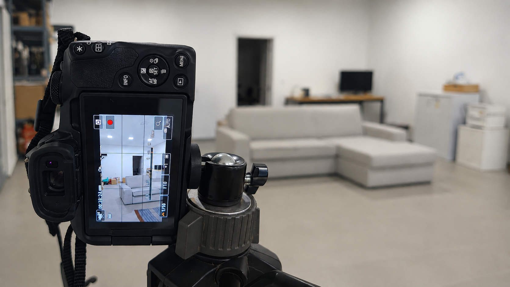

CURTAS
Projetos audiovisuais desenvolvidos no âmbito da Licenciatura em Multimédia, explorando a criação de narrativas através da imagem em movimento. Através da realização, edição e composição audiovisual, estes trabalhos permitiram desenvolver competências na área do vídeo, storytelling e comunicação visual.
Informação
Tipo
Projetos Audiovisuais
Área
Vídeo e Multimédia
Ano
2024 - 2026
Ferramentas
Adobe Premiere
After Effects
Adobe Audition
Projetos Desenvolvidos
Reflexos | Trailer
Reflexos é uma curta-metragem que explora a realidade por trás da imagem perfeita criada nas redes sociais. Através da perspetiva de um influencer, a narrativa revela o contraste entre a vida que é apresentada ao público e os momentos que permanecem escondidos fora da câmara.
Não adormeças
Não Adormeças é uma curta-metragem que explora a ansiedade e a pressão associadas aos momentos de avaliação, através da experiência de uma estudante antes de um teste importante.
Processo Criativo
O desenvolvimento das curtas permitiu explorar diferentes etapas da
produção audiovisual, desde a criação da ideia inicial até à edição
final.
Planeamento
Definição do conceito, criação da narrativa e organização das ideias
principais.
Produção
Captação de imagem e criação dos elementos necessários para construir a
história.
Pós-produção
Edição de vídeo, tratamento de imagem, montagem e aplicação de elementos
gráficos.
Competências
Narrativa Audiovisual
Edição de Vídeo
Motion Graphics
Comunicação Visual
Explorar Curtas
Uma coleção de projetos audiovisuais desenvolvidos através da criação de narrativas, edição e exploração da linguagem cinematográfica.